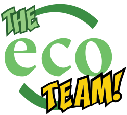

Acerca de E C O T E A M
Pero, ¿quién comenzó la idea de Eco Team? Bueno, fue un joven llamado Aaron, gracias a que pudo identificar varios problemas en su comunidad y colonia, decidio hacer una pagina para que la gente tenga acceso mas facil y rapido sobre como apoyar para que no haya tanto humo e inundaciones, que son a causa del mal manejamiento de los desechos que todos tenemos.
